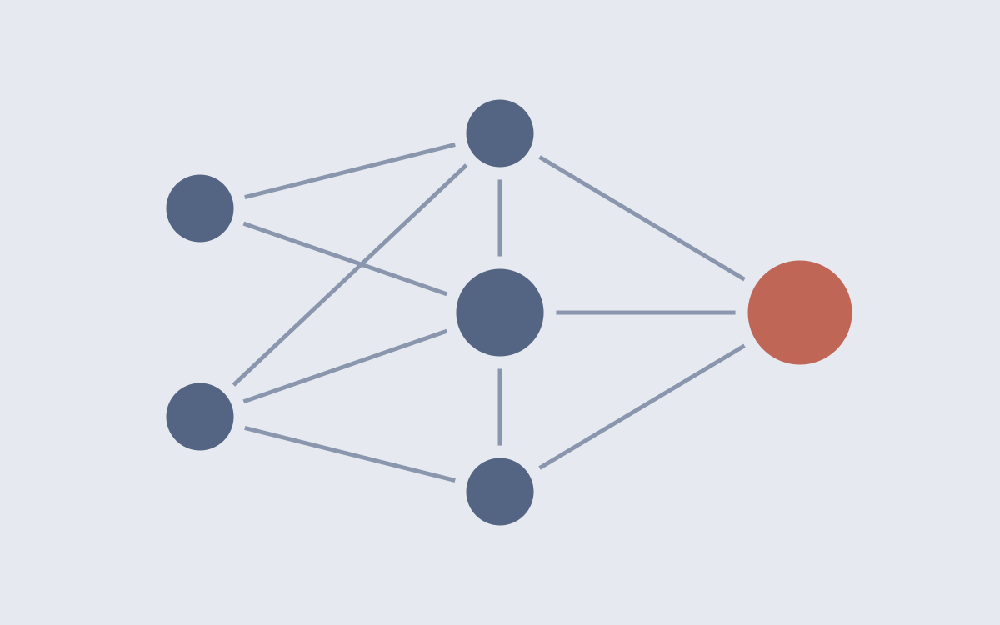
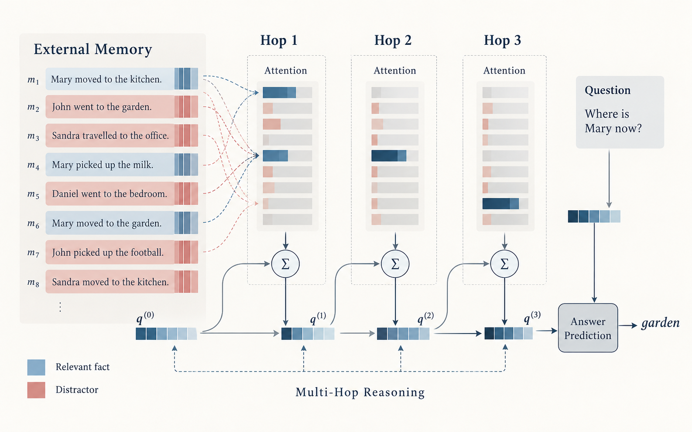

Does Reranking Fix 'Lost in the Middle'? Cross-Encoder Reranking in Small-LLM RAG, in English and French
Yasmine El Alaoui · Fatima Zahrae Ahannuk · Merouane Ayach
Start with an NLP question you can investigate, a dataset you can access, and an experiment you can finish with your available time and hardware.
Explore the questions our students are investigating.

Yasmine El Alaoui · Fatima Zahrae Ahannuk · Merouane Ayach

Bjibji Hamza · Elbouk Abderrahimane
Download proposal template · YAML
Rename the file to your-team-project.yml. Use spaces for indentation and keep the field names unchanged. The comments in the template explain what to write; text after >- can span several indented lines.
A strong project can take either of two directions: a deep implementation from scratch of a model from the research literature, or a thoughtful application of an existing model to a real problem. Both are equally valid. Choose the direction that lets you demonstrate understanding, make meaningful decisions, and support your conclusions with evidence.
Choose a published model and implement its central mechanisms yourself. Explain how the paper’s ideas become code, verify that the implementation behaves as intended, and investigate at least one design choice through a controlled experiment. You may use PyTorch and automatic differentiation; identify clearly which components you implement and which you reuse. A smaller model and dataset are acceptable when they let you study the mechanism carefully.
Choose a concrete user need and apply or adapt an existing model using relevant data. The contribution lies in the complete investigation: preparing the data, choosing an approach, comparing it with a simple baseline, evaluating realistic cases, and explaining failures. Show what the system helps a user accomplish and where it still needs improvement.
For either direction, state one clear question, compare against a baseline, and discuss concrete errors. The project’s strength comes from the depth of the implementation or the usefulness of the application, supported by careful evaluation. These examples are starting points; you may propose your own topic.
| Include | Make it concrete |
|---|---|
| Question | One research or engineering question about language |
| Dataset | Source, access and usage terms, languages, domain, and usable size |
| Approach | A baseline and the model you intend to build or adapt; identify reused components and pretrained weights |
| Evaluation | Train/validation/test splits, leakage prevention, suitable metrics, and example-level error analysis |
| Experiment | One design choice you will vary and a prediction before running it |
| Feasibility | Available hardware, computation, milestones, a smaller fallback, and team roles |
Describe a plan, not results you have not measured. A focused comparison with clear evidence is a useful starting point.
The first block of the YAML contains your proposed public card: title, student names, a 40–70-word description, and optional thumbnail information. The proposal block contains the detailed plan for instructor review and is not intended for the public gallery.
Do not include student IDs, phone numbers, or other private information. If you supply a thumbnail, send it alongside the YAML file, choose an image you may share, include its source, and write useful alt text. A landscape PNG, JPG, or WebP around 1200 × 750 pixels works well; leave the thumbnail fields empty if you do not have one.
The final four weeks of this NLP course are reserved for student project presentations. Approved proposals and their public summaries will be added here after review.
The proposal deadline, submission arrangements, exact presentation schedule, and detailed evaluation rubric will be announced separately.
Looking for the course notebooks? Browse coding projects.